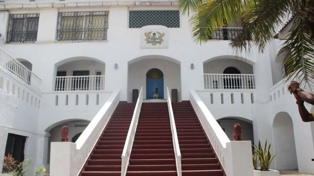

The castle's origins can be traced to a lodge built by Swedes in 1652. Nine years later, the Danish built a fort on the site and called it Fort Christiansborg (“Christian's Fortress”), named after the King of Denmark, Christian IV. Over time, the fort was enlarged and converted into a castle.In 1661, Jost Cramer, the Danish governor of the Cape Coast fort, Fort Fredericksborg, obtained the site for 3,200 gold florins, from Paramount Chief Okaikoi of the Ga ethnic group.
At this site, the Danes built a stone fort in 1659, to replace the earthen lodge that had been erected by the Swedish African Company in the 17th century. They named it Christiansborg, meaning ‘Christian’s Fortress’, after the King of Denmark, Christian IV, who passed away in 1648.
After 1876, British colonial governors ruled from the castle. They abandoned it from 1890 to 1901, when it was used as a constabulary mess, and later as a psychiatric asylum. In 1902, Christiansburg Castle once again became the seat of government, and today, the elegant edifice houses the offices of the President of Ghana.
Its location by the Atlantic Ocean was advantageous for trading purposes. It made it easy for the James Lighthouse to identify ships that were arriving at the coast in order to regulate them. Goods were kept and transported into the arriving ships likewise slaves. These slaves were kept in dungeons at the ends of the castle, transporting them through the DOOR OF NO RETURN to the arriving ships.
There have been many historic visits at the castle by international dignitaries including Queen Elizabeth II and U.S Presidents namely Richard Nixon, Bill Clinton and Barack Obama. Visitors may take great interest in memorable sights such as the credential rooms used by the former British officials and former Ghanaian presidents, slave dungeons, walkway to the Door of No Return, a water reserve and a chapel sometimes used by the Anglican Church.
Visitors would be given the opportunity to take photographs of the captivating sea shore, fishing boats, extensive gardens with a wide varieties of plants and the township by the castle.
The castle allows visitors access to a car park and walkway around the gardens.

Time of Visit
Generally the theater is opened to the public from 9:00 am to 5:00pm on weekdays and from 10:00am to 4:00pm on Saturdays. However these hours may be changed depending on the scheducle of events.
Dos and Don't
If you don't like dressing up, at least wear something respectful . You don´t need to wear an evening dress, but baggy jeans ,T- shirt and sneakers are not good, believe me. Maybe that in different countries it might be perfectly OK - it is not here.
Labadi Beach
The Accra coastline is dotted with many public beaches, castles and forts. All these beautiful public spaces offer access to the beautiful view of the Atlantic Ocean crashing against the shore. Labadi Beach, however, is unique among these for its range of dynamic beachside activities. It offers a great urban beach experience, with a clean beachfront, good food and music and new friends just around the corne.Labadi Beach, officially known as the La Pleasure Beach, is a scenic stretch of sand situated in Labadi, a suburb of Accra. It is not to be confused with the La Palm Royal Beach Hotel or the Labadi Beach Hotel, both of which are upscale hotel beaches in the same vicinity. It is the most popular beach in Ghana, with a spacious shoreline lined with sparse coconut trees and plenty of activities on offer.There are dozens of bars littered across the place, where you can enjoy cool beers or try out locally-brewed gin and spirits like Akpeteshi or Shocker. These very potent drinks, consumed in moderation, are the drink of choice for many local beach goers. There are also hookah bars in smoking areas, for those who enjoy tobacco.
The food is also a treat although it is mainly street food. Local favourites like charcoal-grilled tilapia, spicy kebabs and jollof rice are sold for very cheap. There are also stalls where you can buy continental dishes like french fries, burgers and salads.

Time of Visit
Generally the theater is opened to the public from 9:00 am to 5:00pm on weekdays and from 10:00am to 4:00pm on Saturdays. However these hours may be changed depending on the scheducle of events.
Dos and Don't
If you don't like dressing up, at least wear something respectful . You don´t need to wear an evening dress, but baggy jeans ,T- shirt and sneakers are not good, believe me. Maybe that in different countries it might be perfectly OK - it is not here.